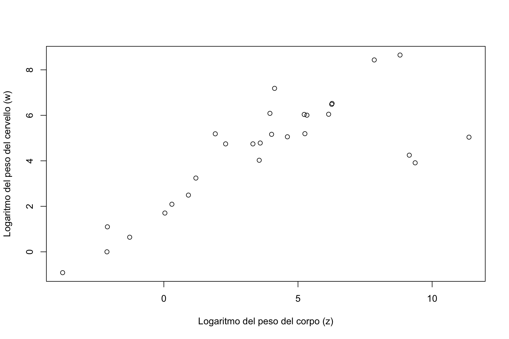
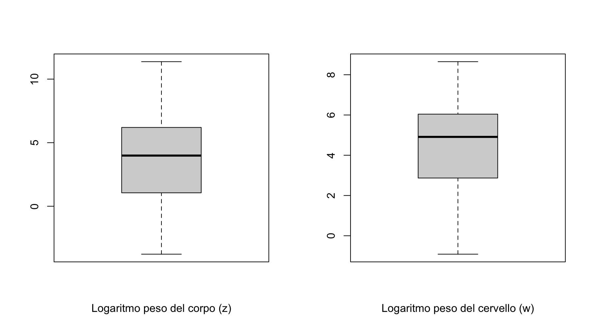

Statistica I
Esame 31 Gennaio 2022
Esercizio 1
I seguenti dati provengono da uno studio condotto nel 1987 su un campione di donne in gravidanza. Dopo tre mesi di gravidanza, le donne nel campione hanno completato un questionario riguardante il consumo di alcolici, misurato come numero medio di drink al giorno. Dopo la nascita è stata registrata la presenza o l’assenza di malformazioni congenite nel bambino. I dati raccolti sono riassunti nella seguente tabella, che descrivono le frequenze assolute congiunte delle variabili alcolici e malformazione.
| \(0\) | \(< 1\) | \(1 - 2\) | \(3 - 5\) | \(\ge 6\) | |
|---|---|---|---|---|---|
| Assente | 17066 | 14464 | 788 | 126 | 37 |
| Presente | 48 | 38 | 5 | 1 | 1 |
Si calcolino, se possibile, media e mediana della variabile marginale
alcolici. Si giustifichino opportunamente le eventuali assunzioni impiegate.Si confrontino i boxplot della variabile
alcolici, assumendo che non assuma valori maggiori di \(6\), condizionatamente a ciascuna modalità della variabilemalformazione.Si ottengano le distribuzioni condizionate della variabile
malformazione, condizionatamente a ciascuna classe della variabilealcolici.Le variabili
alcoliciemalformazionesono dipendenti in distribuzione tra loro? Si giustifichi la risposta con adeguati indici e si commentino i risultati.Le variabili
alcoliciemalformazionesono dipendenti in mediana? Si proponga un indice per misurare il fenomeno, evidenziandone pregi e difetti, e si commentino i risultati.
Approfondimento (non presente all’esame)
I dati analizzati al punto precedente sono tratti dall’articolo scientifico Graubaurd and Korn (1987).
Esercizio 2
Viene registrato il peso del corpo (\(x\)) e il peso del cervello (\(y\)) di \(n=28\) animali, misurato in chilogrammi e grammi, rispettivamente. Si definiscano inoltre le variabili trasformate \(z = \log(x)\) e \(w = \log(y)\). Alcuni grafici relativi alle variabili \(z\) e \(w\) sono riportati nel seguito.


(Teoria). Si enunci la disuguaglianza di Jensen.
Sulla base dei grafici precedenti, si ottengano dei valori approssimativi per le mediane di \(z\) e \(w\). Si ottengano inoltre dei valori approssimativi per il primo ed il terzo quartile di queste variabili.
Si calcolino quindi mediane, quartili e degli opportuni indici di variabilità per le variabili originarie \(x\) ed \(y\).
Si consideri il modello lineare \(w_i = \alpha + \beta z_i + \epsilon_i\). Si ottengano le stime ai minimi quadrati per \(\alpha\) e \(\beta\), sapendo inoltre che \[ \sum_{i=1}^{28} z_i = 105.5965551, \quad \sum_{i=1}^{28} w_i = 123.9124786 \] \[ \sum_{i=1}^{28} z_i^2 = 782.1185945, \quad \sum_{i=1}^{28} w_i^2 = 703.7949529, \quad \sum_{i=1}^{28} z_iw_i = 657.7151129. \]
Si ottenga un opportuno indice di adattamento ai dati per il modello calcolato al punto precedente.
Si discuta un possibile modello statistico che descriva la variabile
peso del cervello(\(y\)) in funzione dipeso del corpo(\(x\)). Si stimino eventuali parametri ignoti.
Esercizio 3
Siano \(f_1,\dots,f_k\) e \(g_1,\dots,g_k\) delle frequenze relative. Si assuma che \(f_j, g_j > 0\) per ogni \(j=1,\dots,k\). Quindi, si introduca l’indice
\[ \text{KL} = \sum_{j=1}^k f_j \log\left(\frac{f_j}{g_j}\right). \]
Si supponga che \(f_j = g_j\), per ogni \(j=1,\dots,k\). Quale valore assume l’indice KL?
Si supponga che \(g_j = 1/k\), per ogni \(j=1,\dots,k\). A cosa corrisponde la quantità \(\alpha = (\log(k) - \text{KL})\) in questo caso particolare?
È possibile dimostrare che \(\text{KL} > 0\) se \(f_j \neq g_j\) per almeno un valore di \(j=1,\dots,k\). Si proponga quindi un’interpretazione per tale indice nel caso in cui \(f_1,\dots,f_k\) e \(g_1,\dots,g_k\) siano delle frequenze condizionate relative.